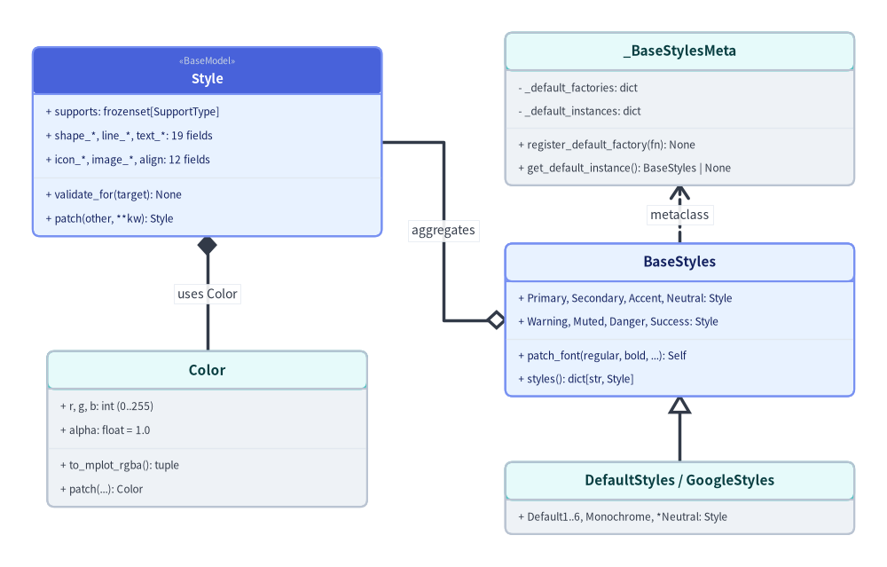
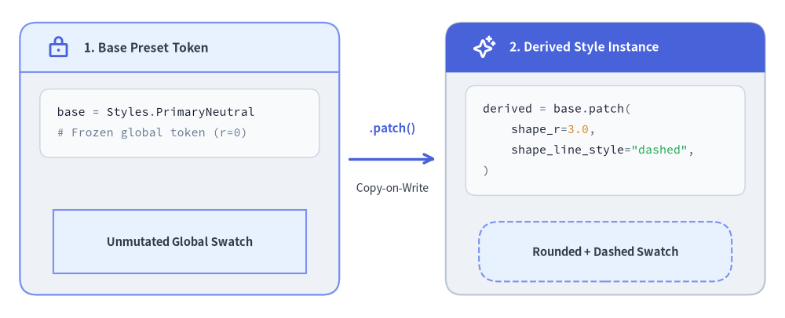

Type System, Guarded Models & Styles
In traditional plotting libraries, styles are passed as untyped dictionaries ({"color": "blue", "lw": 2}), allowing silent key typos or out-of-range values to leak deep into backend rendering code. Drawlib eliminates this fragility through a strongly-typed, immutable style architecture (_core/l2_types, _core/l3_colors, and _core/l3_styles) backed by Pydantic boundary validation and zero-cost lazy preset catalogs.

Source Code
from drawlib.canvas import save, setup
from drawlib.diagrams.class_diagram import ClassDiagram, ClassNode
from drawlib.fonts import FontRoboto, FontSourceCode
from drawlib.styles import Colors, Styles
setup(width=122, height=78)
cd = ClassDiagram(
node_style=Styles.Neutral.patch(text_font=FontSourceCode.ROBOTO_MONO, text_size=10.0),
header_style=Styles.PrimaryNeutral.patch(text_font=FontRoboto.ROBOTO_BOLD, text_size=10.8),
edge_style=Styles.DarkBold,
edge_text_style=Styles.Dark.patch(text_size=10.0),
margin=2.0,
)
# Left Column: Universal Style & RGBA Color Value Objects
style_node = cd.add(
ClassNode(
"Style",
stereotype="BaseModel",
width=48.0,
row_height=3.3,
style=Styles.PrimaryNeutral,
header_style=Styles.PrimaryFlat.patch(text_color=Colors.White),
)
.add_attribute("supports", "frozenset[SupportType]")
.add_attribute("shape_*, line_*, text_*", "19 fields")
.add_attribute("icon_*, image_*, align", "12 fields")
.add_method("validate_for", "target", "None")
.add_method("patch", "other, **kw", "Style"),
xy=(28.0, 57.5),
)
color_node = cd.add(
ClassNode(
"Color",
width=44.0,
row_height=3.3,
style=Styles.Neutral,
header_style=Styles.SecondaryNeutral,
)
.add_attribute("r, g, b", "int (0..255)")
.add_attribute("alpha", "float = 1.0")
.add_method("to_mplot_rgba", "", "tuple")
.add_method("patch", "...", "Color"),
xy=(28.0, 18.0),
)
# Right Column: Lazy Singleton Metaclass & Preset Catalogs
meta_node = cd.add(
ClassNode(
"_BaseStylesMeta",
width=48.0,
row_height=3.2,
style=Styles.Neutral,
header_style=Styles.SecondaryNeutral,
)
.add_attribute("_default_factories", "dict", visibility="-")
.add_attribute("_default_instances", "dict", visibility="-")
.add_method("register_default_factory", "fn", "None")
.add_method("get_default_instance", "", "BaseStyles | None"),
xy=(93.0, 62.0),
)
catalog_node = cd.add(
ClassNode("BaseStyles", width=48.0, row_height=3.2, style=Styles.PrimaryNeutral)
.add_attribute("Primary, Secondary, Accent, Neutral", "Style")
.add_attribute("Warning, Muted, Danger, Success", "Style")
.add_method("patch_font", "regular, bold, ...", "Self")
.add_method("styles", "", "dict[str, Style]"),
xy=(93.0, 33.0),
)
presets_node = cd.add(
ClassNode(
"DefaultStyles / GoogleStyles",
width=48.0,
row_height=3.2,
style=Styles.Neutral,
header_style=Styles.SecondaryNeutral,
).add_attribute("Default1..6, Monochrome, *Neutral", "Style"),
xy=(93.0, 8.5),
)
# Relationships
cd.connect(style_node, color_node, "composition", start_side="bottom", end_side="top", label="uses Color")
cd.connect(catalog_node, style_node, "aggregation", start_side="left", end_side="right", label="aggregates")
cd.connect(catalog_node, meta_node, "dependency", start_side="top", end_side="bottom", label="metaclass")
cd.connect(presets_node, catalog_node, "inheritance", start_side="top", end_side="bottom")
cd.draw(xy=(61.0, 39.0), align="center")
save()
1. Concept: Immutable Value Objects & Target Invariants
Styles in Drawlib are frozen Pydantic Value Objects (ConfigDict(frozen=True, extra="forbid", defer_build=True)). Every style modification creates an isolated copy rather than mutating shared global tokens.
1.1. Single Universal Style Model (32 Fields)
Rather than fragmenting configuration across separate shape, stroke, and font classes, _core/l3_styles/_style.py consolidates styling into Style(BaseModel) with 32 total fields (31 visual/transform fields + supports):
| Field Group | Count | Exact Style Attributes |
|---|---|---|
| Target Set | 1 |
supports: frozenset[SupportType] ("shape", "line", "text", "icon", "image") |
Shape (shape_*) |
5 |
shape_fill_color, shape_line_color, shape_line_width, shape_line_style, shape_r |
Line (line_*) |
5 |
line_color, line_width, line_style, line_arrow_head_fill, line_arrow_head_scale |
Text (text_*) |
9 |
text_color, text_size, text_font, text_flip, text_line_spacing, plus 4 badge box fields (text_bg_fill_color, text_bg_line_color, text_bg_line_width, text_bg_line_style) |
Icon (icon_*) |
2 |
icon_color, icon_style ("thin", "light", "regular", "bold", "fill") |
Image (image_*) |
4 |
image_tint_color, image_border_color, image_border_width, image_border_style |
| Align & Transform | 6 |
halign, valign, xy_shift, xy_abs_shift, angle, alpha |
- Auto-Inference & Invariant Validation: When
supportsis omitted,_infer_supports()inspects populated attributes to determine valid drawing targets, and_validate_invariants()verifies that every declared target has its required fields (for example,shape_fill_color,shape_line_color, andshape_line_widthfor"shape"). - Runtime Target Guarding: Before creating any Matplotlib artist, canvas primitives call
style.validate_for("shape")(or"line","text","icon"), failing fast with a descriptiveValueErrorif an incompatible token is passed. - Fast Preset Construction: Built-in catalogs construct trusted
Styletokens via_construct_preset_style()(Style.model_construct(...)), includingStyle.Transparent, avoiding thousands of redundant Pydantic validation passes at import time.
1.2. Copy-on-Write Mutation via .patch()
To customize a preset token for a specific node or connector without mutating global state, Style.patch(other=None, **kwargs) merges attribute overrides, re-evaluates supports invariants, and returns a new frozen Style:

Source Code
from drawlib.canvas import save, setup
from drawlib.icons import phosphor
from drawlib.lines import line
from drawlib.shapes import rectangle
from drawlib.smartarts import Panel, SourceCode, SourceCodeStyles
from drawlib.styles import Styles
from drawlib.text import text
setup(width=118, height=48)
code_theme = SourceCodeStyles.get("default", font_lang="en", text_size=10.5)
# 1. Left Panel: Immutable Preset Token
left_panel = Panel(
"1. Base Preset Token",
style=Styles.Neutral,
header_style=Styles.PrimaryNeutral,
text_style=Styles.DarkBold.patch(text_size=11.2),
icon=phosphor.lock,
icon_style=Styles.PrimaryBold,
header_height=7.5,
)
left_panel.draw((3.0, 3.5), width=48.0, height=41.0)
SourceCode.draw(
xy=(6.0, 34.5),
width=42.0,
code='base = Styles.PrimaryNeutral\n# Frozen global token (r=0)',
styles=code_theme,
code_lang="python",
align="top_left",
)
rectangle(
(27.0, 11.5),
width=38.0,
height=9.5,
style=Styles.PrimaryNeutral,
text="Unmutated Global Swatch",
text_style=Styles.DarkBold.patch(text_size=10.5),
)
# Center Copy-on-Write Arrow
line((52.5, 24.0), (65.5, 24.0), arrow_head="->", style=Styles.PrimaryBold)
text((59.0, 28.5), ".patch()", style=Styles.PrimaryBold.patch(text_size=10.8))
text((59.0, 19.5), "Copy-on-Write", style=Styles.Dark.patch(text_size=10.0))
# 2. Right Panel: Derived Patched Style
right_panel = Panel(
"2. Derived Style Instance",
style=Styles.Neutral,
header_style=Styles.PrimaryFlat,
text_style=Styles.WhiteBold.patch(text_size=11.2),
icon=phosphor.sparkle,
icon_style=Styles.WhiteBold,
header_height=7.5,
)
right_panel.draw((67.0, 3.5), width=48.0, height=41.0)
SourceCode.draw(
xy=(70.0, 35.0),
width=42.0,
code='derived = base.patch(\n shape_r=3.0,\n shape_line_style="dashed",\n)',
styles=code_theme,
code_lang="python",
align="top_left",
)
derived_swatch = Styles.PrimaryNeutral.patch(
shape_r=3.0,
shape_line_style="dashed",
)
rectangle(
(91.0, 10.0),
width=38.0,
height=9.0,
style=derived_swatch,
text="Rounded + Dashed Swatch",
text_style=Styles.DarkBold.patch(text_size=10.5),
)
save()
2. Positioning: L2 Guarded Types, L3 Colors & Preset Catalogs
The styling stack bridges low-level geometry primitives (_core/l2_types) and higher-level domain subsystems (shapes, charts, diagrams, smartarts, and Animation & Slide Engines):
_core/l2_types(Guarded Domain Primitives):- Geometry Tuples:
Coordinate = tuple[float, float],Coordinates = list[Coordinate], plus quadratic and cubic spline control tuples (Bezier2,Bezier3). - Constrained Scalars & Literals:
PosInt,PosFloat,Ratio($[0.0, 1.0]$),Alpha,Bend($(-2.0, 2.0)$),ShapeRadius(PosFloat | tuple[PosFloat, ...]),LineStyle("solid" | "dashed" | "dotted" | "dashdot"), andArrowHead("" | "->" | "<-" | "<->").
- Geometry Tuples:
_core/l3_colors&drawlib.preset_colors:Color(BaseModel): Immutable RGBA value object (r, g, bin0..255,alphain0.0..1.0) supporting hex strings ("#3b82f6"), tuples,.to_mplot_rgba()(normalized floats rounded to 5 decimal places), and.patch().ColorUtils(_core/l3_colors/_color_utils.py): Static utility class providing linear RGBA interpolation (get_intermediate_color,get_intermediate_colors) and ITU-R BT.601 relative luminance (0.299R + 0.587G + 0.114B) viaget_luminance()andget_contrast_text_color(), selecting dark vs. light foreground text against a0.6luminance threshold (withalpha_threshold=0.3transparency fallback).- Color Catalogs:
DefaultColors(DefaultColors1..DefaultColors6),GoogleColors,MonochromeColors, andCssColors(140 standard named CSS web colors).
_core/l3_styles&drawlib.preset_styles:BaseStylesSemantic Matrix: Defines 8 semantic roles (Primary,Secondary,Accent,Warning,Neutral,Muted,Danger,Success— 5 grayscale semantic rolesPrimary,Secondary,Accent,Neutral,MutedinMonochromeStyles, plusLightandDark) across 17 orthogonal variants ("",Bordered,Bold,Thin,Flat,Outline,OutlineBold,OutlineThin,Solid,SolidBold,SolidThin,Dashed,DashedBold,DashedThin,Dotted,DottedBold,DottedThin).- Tinted Neutral Card Tokens: Every catalog (
DefaultStyles/DefaultStyles1..6,GoogleStyles,MonochromeStyles) also provides*Neutraland*NeutralFlatcard tokens (PrimaryNeutral,SecondaryNeutral,BlueNeutral,TealNeutral, etc.) to make 50%+ neutral architectural grounding effortless.
3. Details: Lazy Metaclass Resolution & Boundary Validation
3.1. Zero-Cost Lazy Instantiation (_BaseStylesMeta)
To allow ergonomic class-level token access (DefaultStyles.PrimaryNeutral or GoogleStyles["PrimaryFlat"]) without constructing every multi-hundred-token catalog at import drawlib time, BaseStyles uses _BaseStylesMeta as its metaclass:
class _BaseStylesMeta(type(BaseModel)):
_default_instances: dict[type, BaseStyles] = {}
_default_factories: dict[type, Callable[[], BaseStyles]] = {}
def register_default_factory(cls, factory: Callable[[], BaseStyles]) -> None:
_BaseStylesMeta._default_factories[cls] = factory
def get_default_instance(cls) -> BaseStyles | None:
if cls in _BaseStylesMeta._default_instances:
return _BaseStylesMeta._default_instances[cls]
if cls in _BaseStylesMeta._default_factories:
inst = _BaseStylesMeta._default_factories[cls]()
_BaseStylesMeta._default_instances[cls] = inst
return inst
...
Each preset catalog registers a zero-argument builder via register_default_factory(). Only when a style attribute, dictionary key, or bound class method (patch, patch_font, copy) is first accessed does get_default_instance() materialize and cache the singleton in _default_instances.
3.2. Catalog-Wide Typography Updates via .patch_font()
Localized projects (-l ja, -l zh, -l ko) often need to switch font families and baseline sizes across every style token simultaneously. BaseStyles.patch_font() clones the catalog in a single pass using exact drawlib.fonts enum members:
from drawlib.fonts import FontJapanese, FontSourceCode
from drawlib.styles import Styles
Styles = Styles.patch_font(
regular=FontJapanese.SANSSERIF_REGULAR,
bold=FontJapanese.SANSSERIF_BOLD,
thin=FontJapanese.SANSSERIF_THIN,
sourcecode=FontSourceCode.SOURCEHANCODEJP,
size=11.5,
)
Internally, _resolve_target_font() inspects each token suffix (*Bold, *Thin, or regular), updates text_font and text_size via Style.model_construct(), and returns a new immutable BaseStyles catalog.
3.3. Cyclic Angle & Scalar Validation (_core/l2_types/_style.py)
All scalar constraints execute at the API boundary via Annotated Pydantic validators before any canvas state is touched:
def _normalize_angle(v: Any) -> float:
val = float(v)
if 0.0 <= val <= 360.0:
return val
mod = val % 360.0
return 0.0 if mod == 0.0 else mod
Angle = Annotated[float, BeforeValidator(_normalize_angle)]
Angle90 = Annotated[float, Field(ge=0.0, le=90.0)]
Bend = Annotated[float, Field(gt=-2.0, lt=2.0)]
Values inside [0.0, 360.0] (including 360.0 for full-circle arcs) are preserved verbatim, while out-of-bounds angles (-90.0 -> 270.0, 450.0 -> 90.0) normalize deterministically via modulo arithmetic.
Next, inspect the cryptographic image cache and static AST analyzer in Cache & AST Engine.